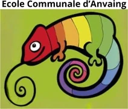
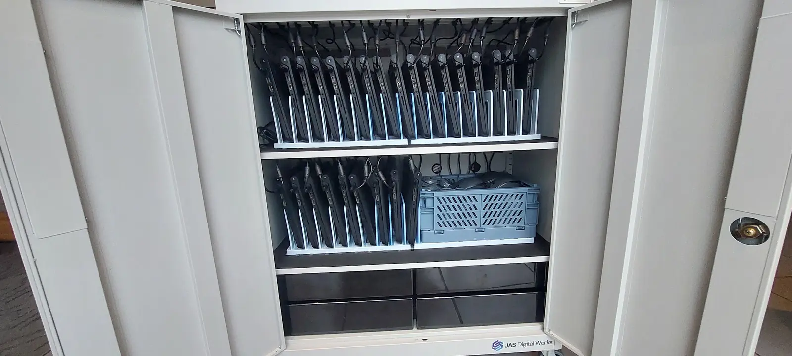
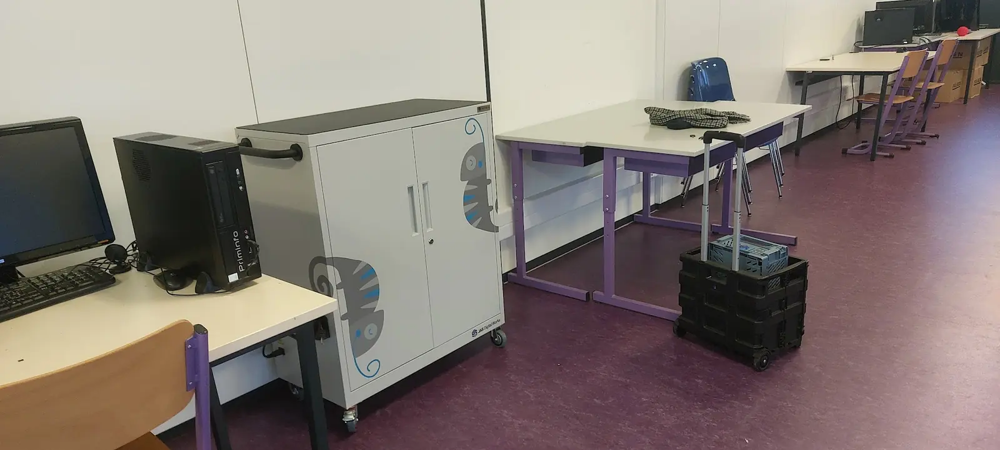
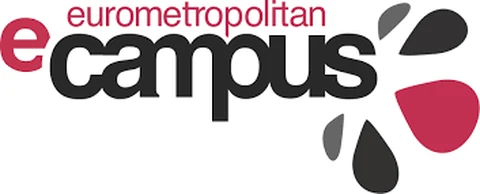

Ateliers, équipement, plateformes et sites web, auprès d'écoles et d'acteurs éducatifs belges. Du plus récent au plus ancien.
PlateformeBelgique francophone, tous réseaux
Le travail collaboratif des enseignants
Plateforme d'encodage, de partage et de suivi du travail collaboratif des enseignants, au sein des écoles de la Belgique francophone, tous réseaux confondus.
Plateforme reliant les panneaux d'affichage d'un jardin pédagogique à un contenu numérique explicatif, dans le cadre du projet « La biodiversité à tous les étages ».
Animation d'ateliers numériques au profit des élèves de l'école communale d'Anvaing.

ÉquipementÉcole communale d'Anvaing
Une vingtaine de Chromebooks et leur armoire
Fourniture d'un parc d'une vingtaine de Chromebooks, avec son armoire de stockage et de rechargement, prêté à l'école communale d'Anvaing dans le cadre d'un partenariat d'exclusivité.


Médiation numériqueeCampus, Tournai
Ateliers digitaux avec des jeunes
Animation d'ateliers numériques auprès de jeunes, à l'eCampus de Tournai.

Un projet pour votre établissement ?
Ateliers, équipement, site web ou outil sur mesure — dites-nous ce que vous avez en tête.